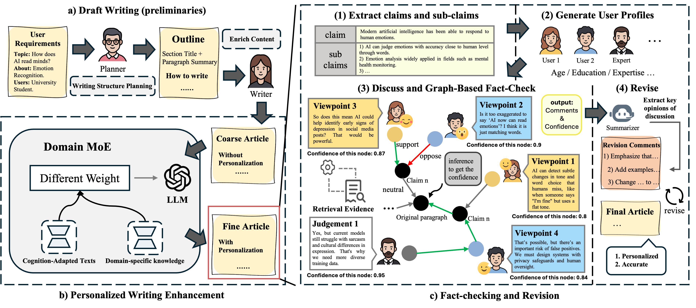

About Me
Hi, I'm Xiaoyu Fan, an undergraduate student at Huazhong University of Science and Technology, currently in my third year of Intelligent Medical Engineering.
I am honored to be a member of the DeepKW, advised by Prof. Ran Wang. Currently, I am interning at SJTU with Prof. Shaobo Cui.
Research Interest: multi-agent system, representation learning, and MLLM.
Download my CV (Updated: Sep. 2026)
Education
Huazhong University of Science and Technology
School of Artificial Intelligence and Automation
B.Eng. in Intelligent Medical Engineering
2024 - 2028
Experience
DeepDelta Lab, Shanghai Jiao Tong University
Visiting Student
Hosts: Prof. Shaobo Cui
Jul. 2026 - Aug. 2026
News
- [08/2026] Our CWF paper is accepted to EMNLP 2026 as a Findings paper.
- [05/2026] Received Meritorious Winner in the 2026 Mathematical Contest in Modeling.
- [09/2025] Received the Self-Reliance and Endeavour Scholarship from Huazhong University of Science and Technology for the 2024-2025 academic year.
Publications

CWF: A Collaborative Writing Framework for Personalized and Reliable Popular Science Writing
EMNLP 2026 Findings
Projects
Omission-based Deception Fake News Detection Dataset Apr. 2026
Constructed a benchmark dataset of approximately 4,000 samples for detecting omission-based deception in LLMs, with hierarchical labels and six fine-grained categories. Implemented data generation scripts and evaluation workflows supporting SFT and prompting-based approaches.
Image Segmentation and Region Coloring System Mar. 2026 - Apr. 2026
Developed an end-to-end C++ / OpenCV image processing pipeline for seed generation, watershed segmentation, region adjacency graph construction, and graph coloring, achieving second-level runtime on 600 x 600 images with about 1,000 seeds.
Honors & Awards
- Silver Award at the "Taikang Cup" Interdisciplinary Innovation Competition in Medicine&Engineering2026
- Meritorious Winner in the 2026 Mathematical Contest in Modeling2026
- Self-Reliance and Endeavour Scholarship2025
Services
- Reviewer @AAAI 2026, @EMNLP 2026, @IJCAI 2026.
Hobbies
🏀、🏐、NBA、Board Game、Science Fiction